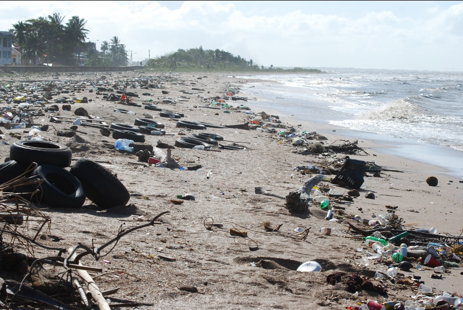

Types of land pollution:
There are different types of land pollution. Many publications group them differently.
Let us see these four main types:
Solid Waste:
These include all the various kinds of rubbish we make at home, school, hospitals, market and work places. Things like paper, plastic containers, bottles, cans, food and even used cars and broken electronic goods, broken furniture and hospital waste are all examples of solid waste. Some of these are biodegradable (meaning they easily rot or decay into organic matter). Examples include food droppings, paper products as well as vegetation (like grass and twigs). Others are not biodegradable, and they include plastics, metals and aluminum cans, broken computer and car parts.

Because these do not easily decay, they pile up in landfills (a place where all the city’s rubbish are sent), where they stay for thousands of years. These bring great harm to the land and people around it.
Pesticides and Fertilizers:
Many farming activities engage in the application of fertilizers, pesticides and insecticides for higher crop yield. This is good because we get more food, but can you think of what happens to the chemicals that end up on the crops and soils? Sometimes, insects and small animals are killed and bigger animals that eat tiny animals (as in food chains) are also harmed. Finally, the chemicals may be washed down as it rains and over time, they end up in the water table below.
Chemical and nuclear power plants produce waste materials that have to be stored somewhere. Fertilizer, insecticides, pesticides, pharmaceuticals manufacturers also produce lots of solid and liquid waste. In many cases they are stored in an environmentally safe way, but there are some that find their way into landfills and other less safe storage facilities. Sometimes they also find their way into leaking pipes and gutters. They end up polluting soils and making crops harmful to our health.
Deforestation:
Humans depend on trees for many things including life. Trees absorb carbon dioxide from the air and enrich the air with Oxygen, which is needed for life. Trees provide wood for humans and a habitat to many land animals, insects and birds. Trees also, help replenish soils and help retain nutrients being washed away. Unfortunately, we have cut down millions of acres of tree for wood, construction, farming and mining purposes, and never planted new trees back. This is a type of land pollution.